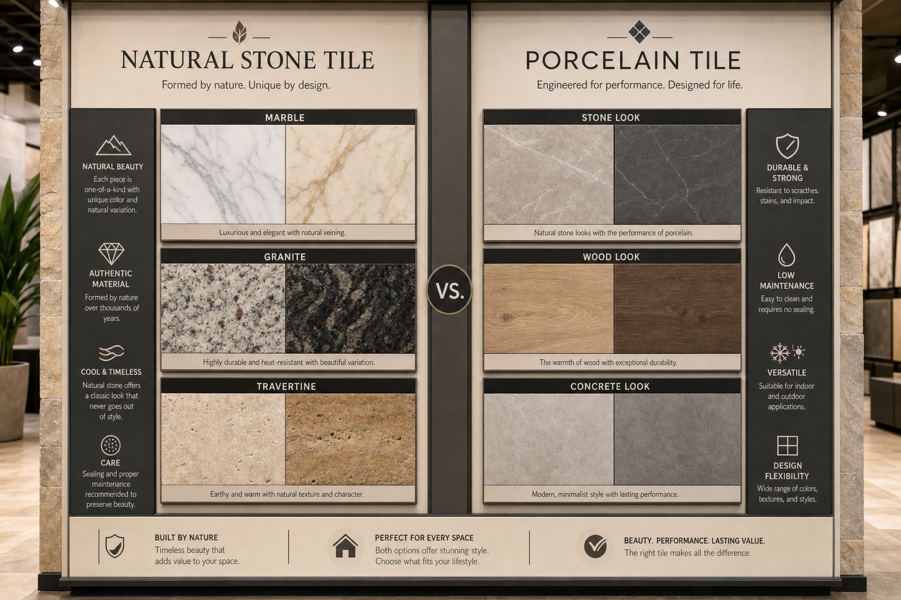

This is the most common question we're asked during consultations: should I choose natural stone or porcelain tile? The honest answer is that both can be excellent choices for Hawaii homes — the right decision depends on your priorities, your space, and your willingness to maintain the material properly.
The Case for Natural Stone
Natural stone — travertine, slate, basalt, marble, limestone — has something that no manufactured tile can fully replicate: genuine natural variation. Each piece is unique. The color, texture, and veining patterns that occur naturally in stone create a visual depth and warmth that feels authentically connected to the earth. In Hawaii, where the landscape itself is defined by volcanic stone and natural materials, stone flooring feels particularly at home.
Hawaiian basalt, in particular, is one of our favorite materials. It's the same stone the islands are made from — dark, fine-grained, and strikingly beautiful. Using it in a Hawaiian home creates an honest connection to place that feels appropriate and distinctive.
The Case for Porcelain
Modern porcelain tile has become extraordinarily sophisticated. Large-format porcelain tiles can authentically replicate travertine, slate, wood grain, and concrete to a degree that surprises many of our clients when they see the samples. More importantly, porcelain offers significant practical advantages: it doesn't require annual sealing, it's non-porous and therefore mold-resistant, it doesn't stain, and it maintains its appearance with minimal maintenance.
For bathroom showers, outdoor areas, and any space that sees regular water exposure, porcelain is generally our recommendation for its maintenance simplicity. For areas where aesthetics and natural character are the primary value — a main living room floor, a master bedroom, a feature wall — natural stone may be worth the additional maintenance commitment.
The Hybrid Approach
Many of our best projects combine both materials. Natural stone in living and bedroom areas, where the aesthetics are most visible and maintenance is manageable. Porcelain in bathrooms, kitchen, and outdoor areas where water resistance and easy cleaning are paramount. This hybrid approach gives you the character of natural stone where it matters most while keeping maintenance practical throughout the home.
Free consultations and quotes from Kauai's premier tile and stone craftsmen.
Get Free Quote →